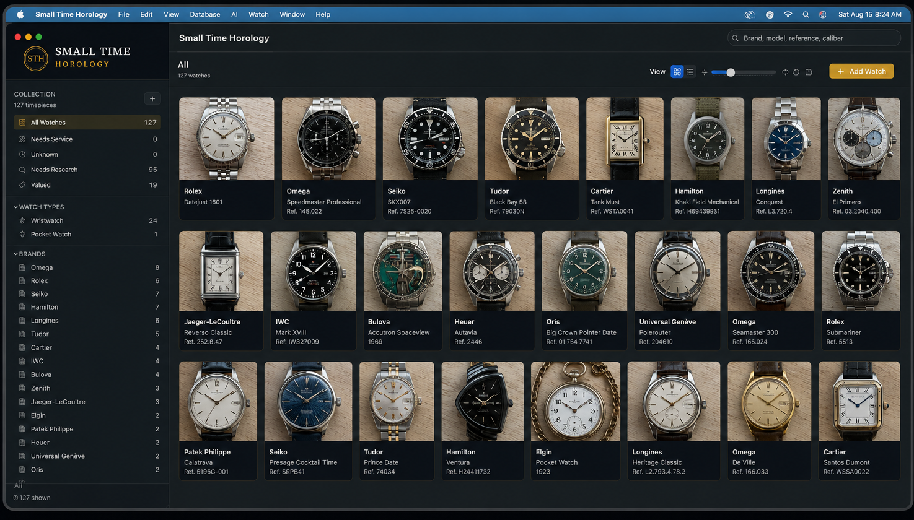

Catalog
Track brand, model, references, calibers, dimensions, provenance, storage, purchase details and photography.
EST. 2026
COLLECTION • RESEARCH • PRESERVE
Your watches have a history.
Give them a place to keep it.
A private collection manager and research companion for wristwatch and pocket watch collectors.
THE COLLECTION, ORGANIZED
Small Time Horology brings identification, research, service, storage, valuation and photography into one collector-focused workspace.

Track brand, model, references, calibers, dimensions, provenance, storage, purchase details and photography.
Use AI-assisted identification and deep research without overwriting verified collector-entered information.
Back up the database and watch media together so the collection remains portable and recoverable.
Document service providers, repairs, parts, costs, condition and the practical history of every watch.
WHY SMALL TIME HOROLOGY
A serious watch collection quickly becomes more than a list of names and references.
Movements, case codes, photos, repair histories, purchase records, storage locations and research all deserve a place of their own. Small Time Horology is designed to keep those details together without losing the character of the collection itself.
MACOS APPLICATION
Small Time Horology is being prepared for broader macOS distribution. A public release will follow after signing, notarization and compatibility testing.